ASHWINI - Gudalur Adivasi Hospital: Community-Based Healthcare in the Nilgiris
1. Introduction
During my field visit to Gudalur in the Nilgiris district of Tamil Nadu, I had the opportunity to learn about ASHWINI (Association for Health Welfare in the Nilgiris), an organisation working towards improving healthcare access and welfare among the indigenous Adivasi communities.
The visit provided an opportunity to understand how healthcare services are organised and delivered in remote tribal communities, where geographical accessibility and social circumstances can create challenges in accessing essential services.
To understand ASHWINI's work, it is also important to understand the broader community and organisational background in which it operates. ASHWINI's work is closely connected with Adivasi Munnetra Sangam (AMS), a grassroots organisation representing the Adivasi communities of the Gudalur valley, and ACCORD, which provides organisational and legal support to the community.
As part of the field visit, I also visited the Erumad Area Centre and Devarshola Area Center, where I interacted with members of the community healthcare team and learned about their responsibilities, healthcare practices, and use of digital tools such as the Avni application and Bahmni Hospital system.
These interactions helped me understand how healthcare services extend beyond the hospital through village level workers, area centres, patient follow ups, and community engagement. This blog documents my understanding of ASHWINI, its organisational background, its healthcare delivery model, and the observations and conversations from my field visit to the Erumad Area Centre and Devarshola Area Center.
2. Understanding the Geography - The Nilgiris and Gudalur
Before understanding the work of ASHWINI and the communities it serves, it is important to understand the geographical setting of the region.
The Nilgiris district is located in Tamil Nadu, India. The district is administratively divided into three revenue divisions, comprising six taluks.
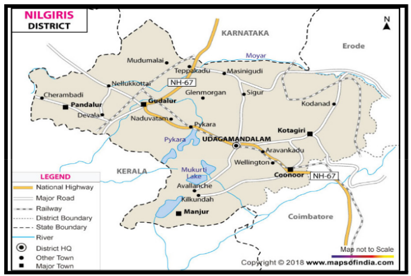
Gudalur and Pandalur are particularly relevant to understanding ASHWINI's work, as its community healthcare services cover Adivasi settlements across these two taluks.
Understanding this geographical distribution also helps explain the importance of a decentralised healthcare system. With communities spread across different villages and hamlets, healthcare services need to reach people closer to where they live rather than depending entirely on access to a central hospital.
3. The Adivasi Communities of Gudalur
The Gudalur valley in the Nilgiris district is home to several indigenous Adivasi communities, each with its own cultural identity, traditional practices, and way of life.
According to the information collected during my research, approximately 20,000 Adivasi people live in the Gudalur valley[cite: 9]. Four major communities are identified in the region: Paniyas, Bettakurumbas, Kattunaikkans, and Mullakurumbas. A smaller Irula community is also present in the region.
The Four Major Adivasi Communities
During the field visit, I learned about the four major Adivasi communities and some of their distinctive characteristics.
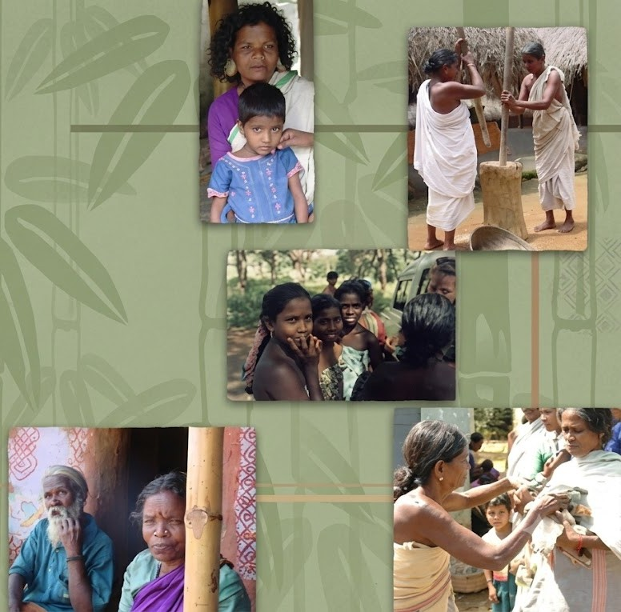
Paniyas
The Paniyas constitute a major population among the Adivasi communities in the Gudalur region. They are one of the four principal communities identified in the area.
Bettakurumbas
The Bettakurumbas have a close association with elephants and forest conservation. During my field visit, I learned about their involvement in caring for elephants in the Mudumalai region. Their traditional knowledge and experience are particularly relevant to this work.
Kattunaikkans
The Kattunaikkans are closely associated with forest environments. As observed during my research, many members of this community live deeper within the forest and depend on forest-related livelihoods.
Mullakurumbas
During my field visit, I learned that the Mullakurumbas have comparatively higher levels of educational participation and economic stability than some of the other communities in the region. Their participation in education was also highlighted during my conversations with the local team.
The Irula Community
In addition to these four major communities, the Irulas are also mentioned among the indigenous communities present in the Gudalur valley. However, the primary focus of this section is on the four major communities identified during my visit.
Understanding the Communities Through Field Observations
One important learning from the field visit was that the Adivasi communities of Gudalur cannot be understood as a single, uniform group. Each community has its own relationship with the surrounding environment, traditional occupations, and social circumstances.
Understanding these differences provides important context for studying the work of organisations such as AMS, ACCORD, and ASHWINI, which work with these communities in areas including land rights, education, healthcare, and community welfare.
4. Historical Challenges Faced by the Adivasi Communities
To understand the challenges faced by the Adivasi communities in Gudalur, it is important to look at their historical relationship with the land and forests.
- • Displacement and Loss of Forest Access
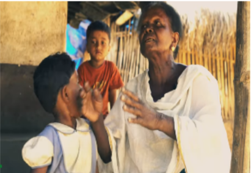
Historically, the Adivasi communities of Gudalur experienced repeated displacement from their traditional lands.
According to the historical information collected during my Research, the displacement began during British rule, when large areas of forest were cleared to establish tea plantations[cite: 10]. Subsequently, local plantation owners and other groups who migrated to the region further affected the communities' access to their traditional lands.
The remaining forest areas were later brought under government control and designated as wildlife sanctuaries. As access to the forests became increasingly restricted, the traditional way of life of many Adivasi communities was significantly affected.
- • Social Marginalisation and Exploitation
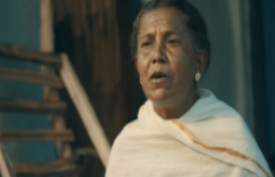
The loss of access to their traditional environment was accompanied by severe social marginalisation[cite: 10]. Adivasi communities faced discrimination and were placed at the bottom of the social hierarchy[cite: 10].
Historical accounts also describe the extent of social exclusion they experienced[cite: 10]. Discrimination was so deeply rooted that some Adivasis would turn away and face a wall to avoid direct eye contact with others, as making eye contact was considered inauspicious in their social circumstances[cite: 10].
They were also vulnerable to different forms of exploitation, including financial, physical, and mental exploitation[cite: 10].
- • Healthcare Challenges and Living Conditions
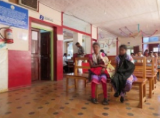
The difficult social and economic conditions of the Adivasi communities were also reflected in their health[cite: 10]. Historical accounts describe widespread malnutrition and serious health challenges[cite: 10]. Maternal healthcare was limited, and women sometimes died during childbirth[cite: 10].
Certain diseases, including dysentery, tuberculosis, typhoid, and anaemia, were significant causes of illness and death[cite: 10].
The major challenge was access to medical treatment[cite: 10]. Many people preferred to remain at home and face illness rather than travel long distances to unfamiliar hospitals, where they did not necessarily feel welcomed or comfortable[cite: 10].
The Need for Community-Based Support
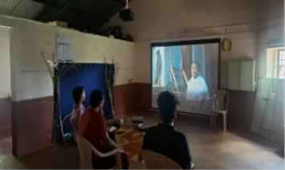
These historical challenges highlight the difficulties faced by the Adivasi communities in protecting their land, preserving their cultural identity, accessing essential services, and maintaining their traditional livelihoods[cite: 10].
The combination of displacement, social discrimination, exploitation, and limited healthcare access created a need for organised community support[cite: 10].
Understanding this background helps explain the importance of initiatives such as Adivasi Munnetra Sangam (AMS), ACCORD, and ASHWINI, which work in different areas of community development, rights, and welfare[cite: 10].
We will now explore how the Adivasi communities came together through Adivasi Munnetra Sangam to address these challenges collectively[cite: 10].
5. Formation of Adivasi Munnetra Sangam (AMS)
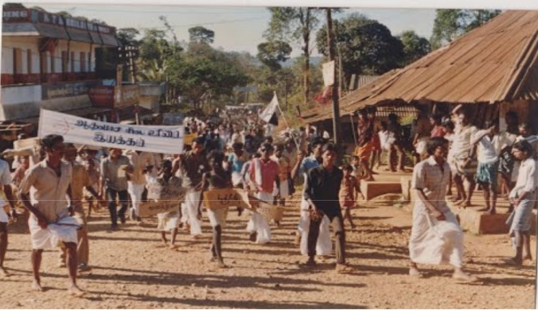
The historical challenges faced by the Adivasi communities highlighted the need for a collective organisation that could represent their interests, protect their rights, and support their development[cite: 10].
In response to these needs, Adivasi Munnetra Sangam (AMS) was formed in 1988 as a grassroots people's organisation representing the indigenous Adivasi communities of the Gudalur valley in the Nilgiris district of Tamil Nadu[cite: 10].
AMS functions as a federation of village level Adivasi Sangams, bringing together community members to collectively address the issues affecting their lives[cite: 10].
˅ Why Was AMS Formed?
The formation of AMS was driven by the need to strengthen the position of Adivasi communities and provide them with a collective platform to address their challenges .
According to my research and field observations, the organisation focuses on three important areas:
Key Objectives of AMS
1. Protecting Land Rights
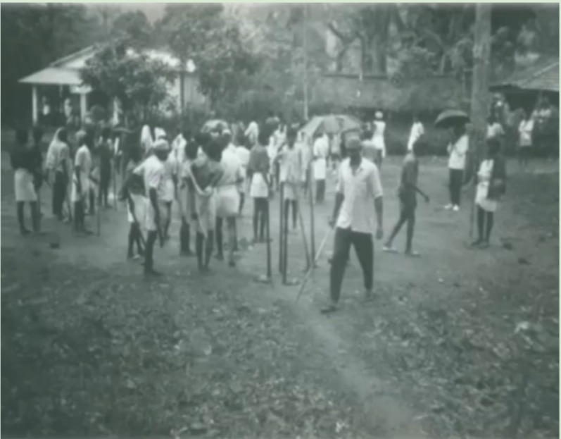
One of the major challenges faced by Adivasi communities was the loss of their traditional lands. Some landlords had taken control of land belonging to tribal families, leaving them vulnerable and without proper legal documentation.
After the formation of AMS, the organisation began supporting community members in securing their land rights through proper legal documentation and by working with government officials.
During my field visit, I learned that this support helped many Adivasi families strengthen their legal position regarding their land ownership.
2. Protecting Cultural Identity
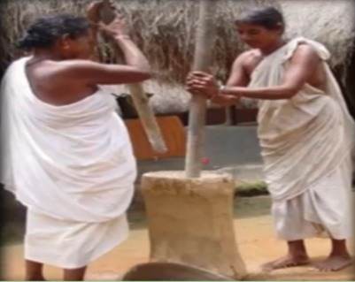
AMS also works towards protecting the cultural identity and interests of the indigenous communities. Its role includes bringing people together through village-level organisations and providing a collective platform for representing their concerns.
3. Preventing Exploitation and Empowering Communities
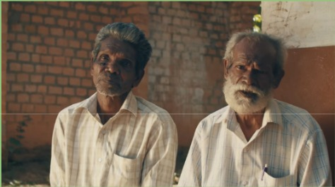
Another important objective of AMS is to protect Adivasi communities from different forms of exploitation and strengthen their ability to address social and community-related issues.
By organising communities at the village level, AMS helps people raise their concerns collectively and seek support in protecting their rights.
AMS and Its Role in Community Development
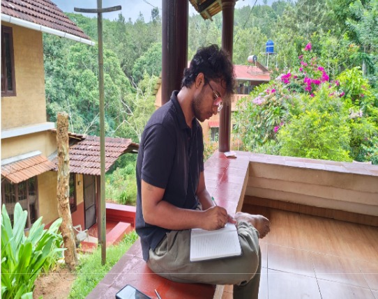
According to the information collected during my field visit, AMS represents more than 20,000 Adivasi people across the Gudalur valley, belonging to the four major communities: Paniyas, Bettakurumbas, Kattunaikkans, and Mullakurumbas, along with a smaller Irula population.
Its work is not limited to representing community concerns. The organisation also forms part of a broader network of initiatives addressing different aspects of Adivasi welfare, including healthcare, education, land rights, and community development.
The formation of AMS in 1988 was an important step towards organised community representation. It also provided the foundation for understanding the development of other institutions, including ASHWINI and Vidyodaya, which address specific community needs.
6. The Relationship Between AMS ,ACCORD, ASHWINI and Vidyodaya
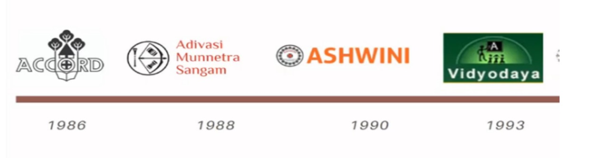
The development of the Adivasi communities in Gudalur involves addressing several interconnected needs, including land rights, healthcare, education, and access to essential resources.
During my field visit, I learned about four organisations that are associated with this broader community development effort: Adivasi Munnetra Sangam (AMS), ACCORD, ASHWINI, and Vidyodaya. Each organisation has a distinct role in addressing the needs of the Adivasi communities.
ACCORD – Organisational and Legal Support
ACCORD (Action for Community Organisation, Rehabilitation and Development) was founded in 1986 by Stan and Mari Thekaekara.
According to my understanding notes, ACCORD provides organisational and legal support to Adivasi communities. Its work focuses on helping community members reclaim their lands, strengthen their rights, and work towards self-reliance.
Land and resource protection are important aspects of this work, particularly considering the historical challenges faced by Adivasi communities in securing their traditional lands.
AMS - Community Organisation and Representation
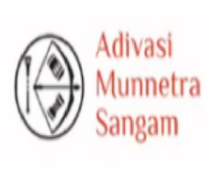
Adivasi Munnetra Sangam (AMS) was formed in 1988 as a grassroots people's organisation and federation of village-level Adivasi Sangams across the Gudalur valley.
Its primary role is to bring community members together, represent their concerns, protect their cultural identity, and support their efforts to secure their rights.
AMS provides a community-level platform through which Adivasis can collectively address issues affecting their lives.
ASHWINI - Healthcare and Community Welfare
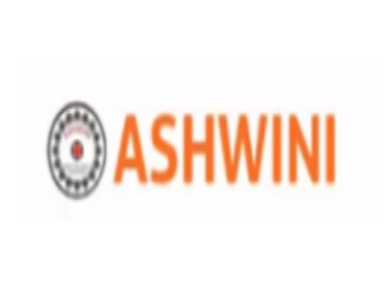
ASHWINI (Association for Health Welfare in the Nilgiris) was established in 1990 as a registered charitable healthcare society owned and managed by the Adivasi communities through AMS.
Its primary focus is healthcare and community welfare. ASHWINI operates the 50-bed Gudalur Adivasi Hospital in Gudalur and also runs village-level community health programmes.
Its activities include training tribal health workers, conducting mobile clinics, and providing healthcare services through a network that connects remote communities with the hospital.
Vidyodaya – Education
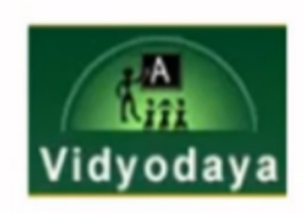
Vidyodaya is associated with the education-related needs of the Adivasi communities.
Education was identified as another important requirement for strengthening the community. The role of Vidyodaya in this broader network is connected to addressing educational needs and supporting opportunities for children from Adivasi communities.
Further details about its programmes and activities were not covered in my field visit notes.
Understanding the Different Roles
From my observations and research, I understood that these organisations address different but interconnected requirements of the Adivasi communities.
Understanding the Connection Through Community Needs
One of the important things I learned during my field visit was how the different requirements of the Adivasi communities are addressed through these organisations.
The broader community needs identified in my notes can be understood through three major areas:
- Health: Addressed through ASHWINI, which provides hospital-based and community-level healthcare services.
- Education: Addressed through Vidyodaya, focusing on the educational needs of the community.
- Land and Resources: Supported through ACCORD's organisational and legal work, alongside AMS's community-level representation and collective action.
AMS plays an important role in connecting these efforts with the Adivasi communities, ensuring that their needs and concerns are represented.
Together, these organisations form part of a broader community development effort that addresses healthcare, education, land rights, and the protection of Adivasi identity.
Understanding this relationship provides the background for exploring ASHWINI in greater detail, particularly its healthcare model and the way it delivers services to communities across Gudalur and Pandalur.
7. About ASHWINI – A Community Based Healthcare Model
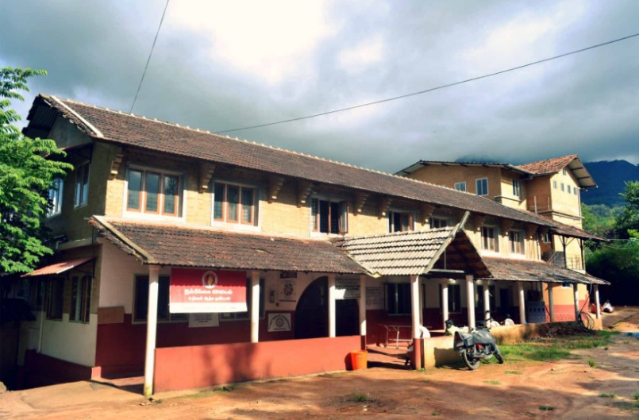
ASHWINI (Association for Health Welfare in the Nilgiris) is a registered charitable healthcare society established in 1990 in Gudalur, Tamil Nadu. It works towards improving healthcare access and welfare among the indigenous Adivasi communities of the Nilgiris district.
One of the important aspects of ASHWINI is its connection with the community it serves. The organisation is owned and managed by Adivasi communities through Adivasi Munnetra Sangam (AMS). Its healthcare approach focuses not only on providing treatment at the hospital but also on extending essential healthcare services to people living in remote villages and hamlets.
Target Population and Geographical Coverage
ASHWINI primarily serves the Adivasi communities living in Gudalur and Pandalur taluks of the Nilgiris district.
According to the information collected during my research, its healthcare network covers approximately 20,000–22,000 Adivasi people across more than 314–320 hamlets.
The communities served include:
- Paniyas
- Bettakurumbas
- Kattunaikkans
- Mullakurumbas
The network also serves the smaller Irula community.
Considering the geographical distribution of these communities, providing healthcare only through a central hospital would make access difficult for people living in remote settlements. Therefore, ASHWINI follows a community-based approach that connects village-level healthcare workers, area centres, and the main hospital.
Gudalur Adivasi Hospital (GAH)
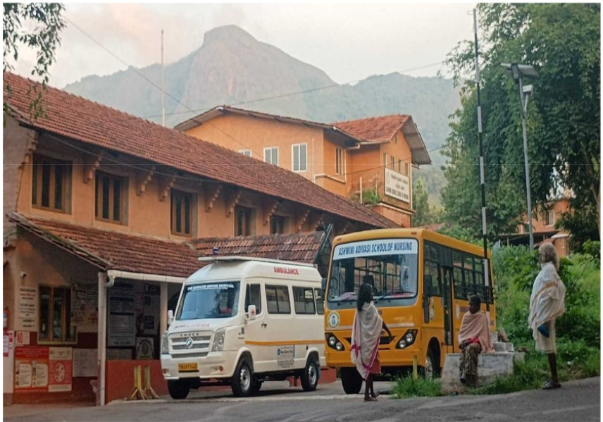
The Gudalur Adivasi Hospital (GAH) is the main hospital operated by ASHWINI. As I visited this hospital, it is a 50 bed secondary-care hospital located in the Gudalur region.
The hospital forms the central part of ASHWINI's healthcare network, providing medical services and supporting the healthcare activities carried out through its village-level programmes and area centres.
Major Healthcare Programmes and Services
ASHWINI provides healthcare services across several areas to address the medical needs of the communities it serves.
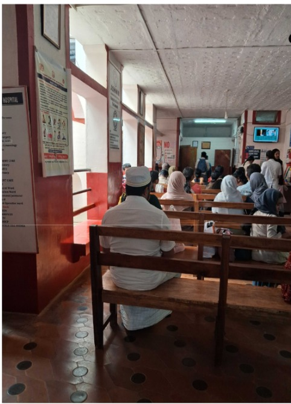
The major programmes and services identified during my visit in the Hospital, it includes:
- 1. Maternal and Child Health: Healthcare services focusing on mothers and children, including support for pregnancy-related care and follow-ups.
- 2. General Surgery: Surgical healthcare services provided through the hospital.
- 3. Obstetrics and Gynaecology: Healthcare services addressing pregnancy, childbirth, and women's reproductive health.
- 4. Mental Health Initiatives: ASHWINI's healthcare activities also include mental health initiatives, such as the Atmiyata programme.
- 5. Chronic Disease Care: Ongoing healthcare support for people living with chronic illnesses, including regular monitoring and follow-up.
- 6. Sickle Cell Centre: A dedicated centre addressing healthcare needs related to sickle cell disease.
- 7. Disability Centre: A centre providing support for people with disabilities and special needs.
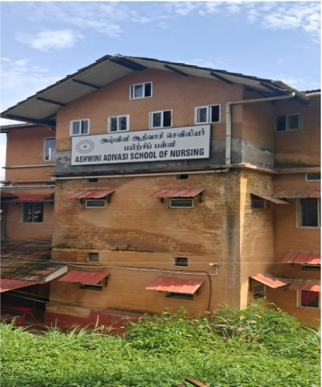
8. School of Nursing for Tribal Girls: ASHWINI also runs a School of Nursing for Tribal Girls, connecting healthcare development with educational and professional opportunities for members of the Adivasi communities.
Extending Healthcare Beyond the Hospital
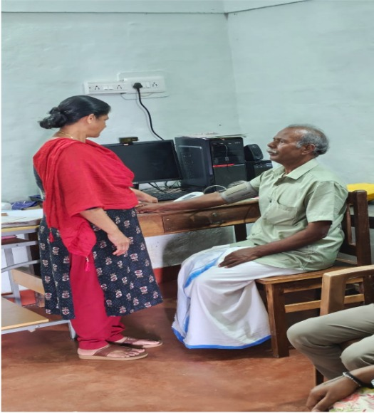
One of the important aspects of ASHWINI's healthcare model is that its work extends beyond the hospital.
The organisation trains tribal health workers and operates village-level community health programmes and area centres. These initiatives help bring healthcare services closer to remote Adivasi settlements.
Through this approach, the hospital is connected with a wider network of healthcare workers and local centres that support preventive care, medical screening, and regular patient follow-ups.
This community-based structure forms an important part of ASHWINI's approach to healthcare delivery.
To understand how this network functions in practice, we will explore ASHWINI's three tier healthcare system and the responsibilities of each level.
8. Understanding ASHWINI's Three Tier Healthcare System
ASHWINI follows a three-tier healthcare delivery structure to provide healthcare services to Adivasi communities across Gudalur and Pandalur taluks.
The system connects frontline healthcare workers in individual hamlets with area-level healthcare centres and the main Gudalur Adivasi Hospital. Each tier has a specific role in delivering healthcare services and supporting patient follow-ups.
This structure helps extend healthcare services beyond the hospital and brings them closer to communities living in geographically remote areas.
Tier 1 – Village Health Volunteers
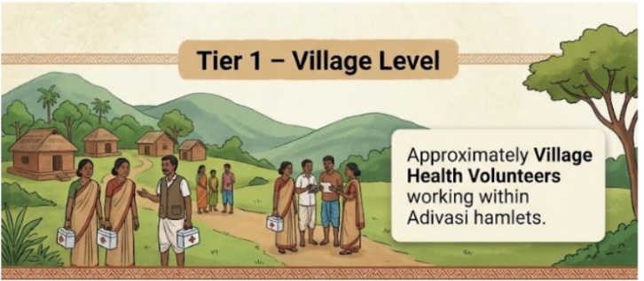
The first tier consists of Village Health Volunteers working across different Adivasi hamlets.
Most of these frontline workers are Adivasi women who work within their own communities. Their presence at the village level helps connect local residents with the wider healthcare network.
By working directly within the hamlets, these volunteers form the first point of contact between the community and ASHWINI's healthcare system.
Tier 2 – Eight Area Centres
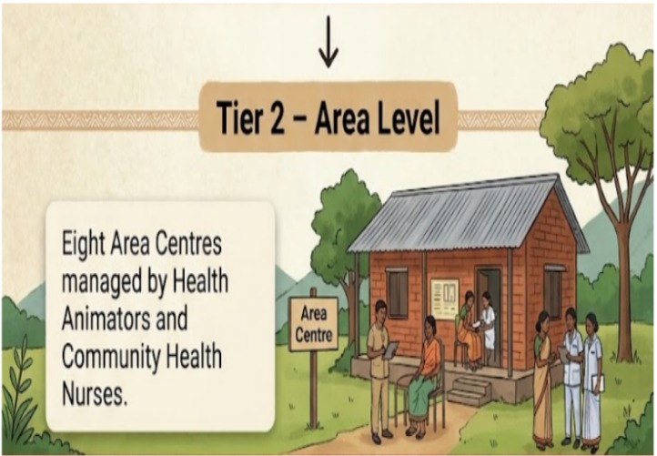
The second tier consists of eight Area Centres distributed across Gudalur and Pandalur taluks.
These centres act as an intermediate level between the village-level healthcare workers and the Gudalur Adivasi Hospital.
The centres are managed by Health Animators (HA) and Community Health Nurses, who support healthcare activities and patient management.
Their responsibilities include:
- Providing essential preventive healthcare services.
- Conducting medical screenings.
- Supporting regular treatment and follow-ups for chronic illnesses.
- Managing and updating patient records.
- Using digital healthcare systems such as the Avni application and Bahmni Hospital system.
The Area Centres help reduce the need for Adivasi families to travel long distances to access primary healthcare services.
Tier 3 – Gudalur Adivasi Hospital (GAH)
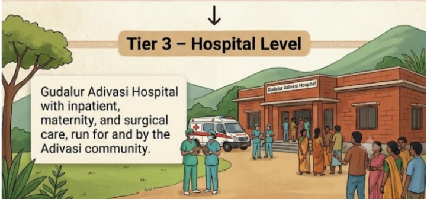
The third tier is the Gudalur Adivasi Hospital, a 50-bed secondary-care hospital operated by ASHWINI.
It serves as the central hospital within the healthcare network, supporting medical services for communities across the two taluks.
While the Village Health Volunteers and Area Centres provide healthcare support closer to the communities, the hospital forms the secondary-care level of the system.
The Role of Digital Healthcare Systems
An important aspect of ASHWINI's healthcare network is the use of digital systems for managing patient information.
According to my field research, the Avni application and Bahmni Hospital system are used to maintain and update patient records.
These systems support patient record management and help healthcare workers monitor medical information and follow-up activities.
During my visit to the Erumad Area Centre, I had the opportunity to understand how healthcare workers use the Avni application in their daily activities. I also learned about some of the practical challenges they experience while using the application.
These observations provided a better understanding of how digital healthcare systems operate at the community level and how technology supports healthcare delivery in remote areas.
The Eight Area Centres and Their Responsibilities
As part of its three-tier healthcare system, ASHWINI operates eight Area Centres across Gudalur and Pandalur taluks in the Nilgiris district.
These centres form the second tier of the healthcare network, connecting village-level healthcare workers with the main Gudalur Adivasi Hospital.
Their geographical distribution helps bring healthcare services closer to Adivasi communities living in different villages and hamlets, reducing the need for families to travel long distances for essential healthcare support.
Geographical Distribution of the Eight Area Centres
According to my research notes, the eight Area Centres are distributed across the two taluks as follows:
This distribution establishes an intermediate healthcare network between the remote hamlets and the central hospital.
Management and Responsibilities of Area Centres
Each Area Centre is managed by Health Animators (HA) and Community Health Nurses. They play an important role in coordinating healthcare activities and supporting the delivery of services within their respective areas.
The major responsibilities of these centres include the following:
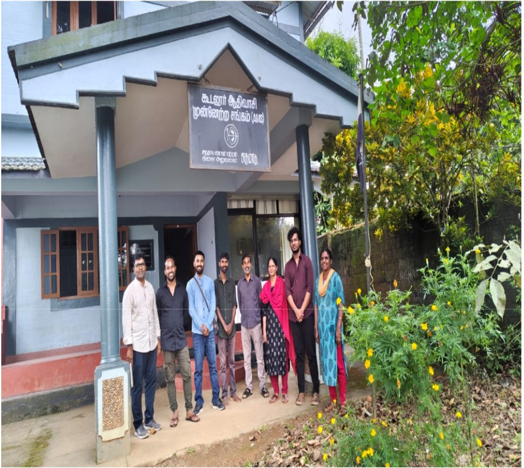
1. Healthcare Management
Health Animators and Community Health Nurses manage healthcare activities at the area level. They support the delivery of essential healthcare services and coordinate activities involving patients and village-level healthcare workers.
2. Patient Record Management
An important responsibility of the Area Centres is maintaining and updating patient records.
ASHWINI uses digital healthcare systems, including:
- Avni Application: Used for maintaining patient information and supporting patient follow-ups.
- Bahmni Hospital System: Used as part of the hospital's digital information management system.
These systems support the management of healthcare records and help maintain patient-related information.
3. Preventive Healthcare and Medical Screening
The Area Centres provide essential preventive healthcare services and medical screening to identify healthcare needs within the communities.
4. Chronic Disease Management
They also support regular treatment and follow-ups for patients with chronic illnesses, including sickle cell anaemia and tuberculosis.
These activities help maintain continuity of care and reduce the need for patients to travel frequently to the main hospital for every healthcare requirement.
The Importance of Area Centres in Community Healthcare
The eight Area Centres play an important role in making ASHWINI's healthcare network accessible to geographically dispersed communities.
Instead of depending entirely on the main hospital, Adivasi families can access essential healthcare support through centres located closer to their settlements.
These centres also provide an important link between frontline healthcare workers and the hospital, supporting patient record management, medical screening, and ongoing treatment.
Understanding the responsibilities of these centres helped me recognise how ASHWINI extends its healthcare services beyond the hospital.
Among these eight centres, I had the opportunity to visit the Erumad Area Centre, where I interacted with healthcare workers, social workers, and other members of the community team. The visit provided a closer understanding of how these responsibilities are carried out in practice.
Field Visit : Erumad Adivasi Training Centre
- Date of Visit : 22 , Oct 2026
- Location of Area Center : Erumad Adivasi Training Center
- Timing of Report : 9:00am
To understand how ASHWINI's community healthcare system functions at the ground level, I visited the Erumad Area Centre, known as the Erumad Adivasi Training Centre.
The visit provided an opportunity to observe the centre's activities, understand the responsibilities of different team members, and interact with people involved in healthcare and community development.
Introduction to the Erumad Adivasi Training Centre
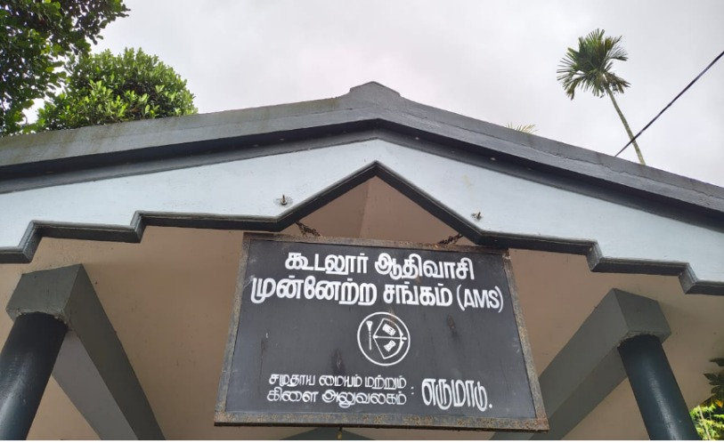
The centre visited was the Erumad Adivasi Training Centre, which functions as one of the eight Area Centres within ASHWINI's community healthcare network.
As an area-level centre, it forms part of the second tier of ASHWINI's three-tier healthcare delivery system, connecting village-level healthcare activities with the main Gudalur Adivasi Hospital.
During the visit, I had the opportunity to understand the different responsibilities handled by the people working at the centre.
Understanding the Team and Their Responsibilities
During my interaction at the Erumad centre, I identified several roles associated with its activities.
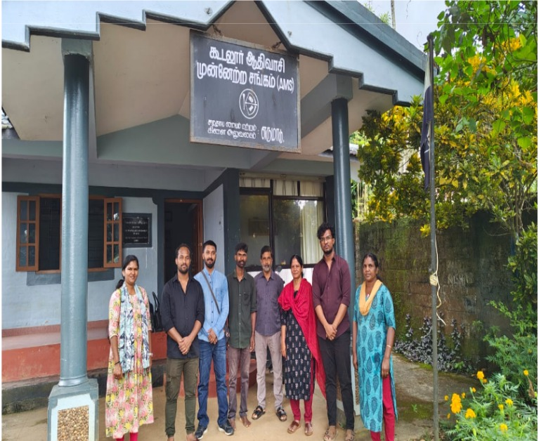
The different roles indicate that the centre's activities extend beyond healthcare alone. They also involve education related coordination, savings related activities, and mental health support.
Understanding the Work at the Centre
One of the important aspects of the visit was the opportunity to interact with people working directly with the community.
Through these conversations, I learned about their responsibilities, the challenges they encounter, and how they support Adivasi families in different situations. The discussions also provided insights into how digital tools such as the Avni application are used in their daily work, particularly for patient registration, monitoring, and follow-ups.
These interactions became an important part of my field learning, as they helped me understand the practical responsibilities of community-level workers beyond what could be understood through organisational research alone.
Conversations with the Healthcare and Community Team
During my visit to the Erumad Adivasi Training Centre, I had the opportunity to interact with different members of the team working with the local Adivasi communities.
These conversations helped me understand that the work carried out at the centre extends beyond providing healthcare services. The team members also support families with social issues, protect community rights, create awareness, and work towards improving educational opportunities for children.
Three interactions provided particularly valuable insights into these responsibilities.
Conversation with Thulasi – Social Worker under the Mental Health Programme
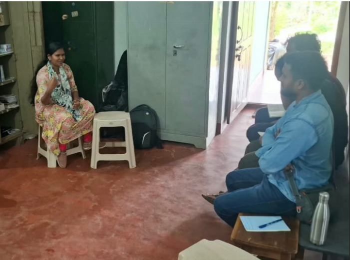
During my interaction with Thulasi, who works as a social worker under the mental health programme, I learned about the use of the Avni application in managing patient information and supporting follow-up activities.
The team had been using the Avni application for approximately ten years. According to the conversation, the application has made it easier to follow up on pregnancy-related cases, particularly Antenatal Care (ANC) and other pregnancy-related care records mentioned during the discussion.
Use of Avni in Patient Follow-ups
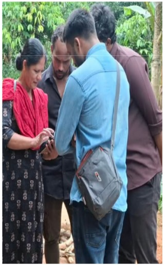
One of the advantages highlighted during the conversation was the ability to maintain patient information digitally and follow up on cases more conveniently.
Previously, patient information was recorded in physical registers and books. Maintaining these records required considerable time and physical storage space.
With the introduction of the Avni application, these two challenges have been reduced to some extent. Digital records have helped minimise the dependence on physical storage and made patient information easier to maintain.
Challenges in Daily Application Usage
Although the application provides several benefits, I also learned that some practical challenges affect its usage.
One interesting observation was that healthcare workers sometimes switch between the digital application and physical diaries depending on their workload.
When the number of patients is relatively low, they find it easier to enter information directly into the Avni application.
However, when they have to attend to a larger number of patients, maintaining records in a physical diary can be more convenient. Entering information separately into the application takes additional time, particularly when healthcare workers are managing several patients.
As a result, some users continue to depend on physical diaries and paper-based records instead of recording every detail directly in the application.
Suggestions and Recommended Improvements
During the discussion, a few areas for improvement were identified:
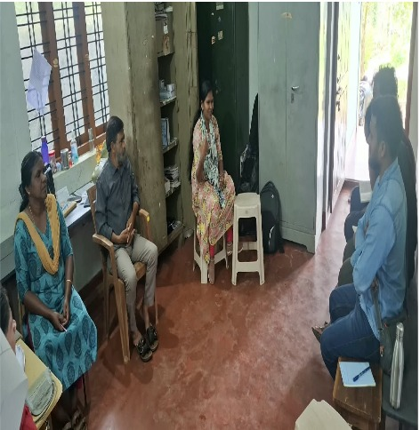
1. Tracking Patients Who Have Not Completed Screening
One requirement concerned identifying patients who have not completed their scheduled screening or treatment.
For example, if 100 people are registered and only 80 have completed screening, healthcare workers want to identify the remaining 20 individuals and understand why they have not completed the process.
This information would help them identify pending cases and take appropriate follow-up action.
2. Application Performance
Another issue mentioned was that the application sometimes becomes slow while entering information. The team associated this with handling large amounts of data, although the exact technical reason was not established during the discussion.
3. Dashboard and Chart Updates
The team also reported that charts sometimes do not reflect the information immediately after data entry.
Improving the consistency of dashboard updates would help users monitor their records and understand the status of their activities more effectively.
Overall, this conversation helped me understand that introducing a digital application is only one part of digital transformation. The application must also fit into the daily working conditions of healthcare workers, particularly when they are managing large numbers of patients.
Conversation with Baradhali – Senior Animator
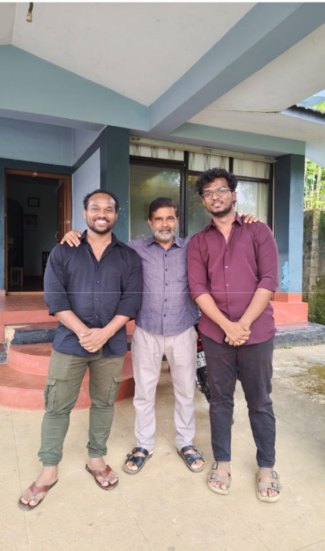
Another important interaction during my visit was with Baradhali, a Senior Animator at the Erumad centre.
Through this conversation, I learned about the wider responsibilities of an animator and the important role they play in creating awareness, supporting families, and helping Adivasi communities protect their rights.
Creating Awareness and Supporting Community Rights
One of the major responsibilities of the Senior Animator is creating awareness among community members about their rights and available support.
During our conversation, I learned that when Adivasi families face issues such as land disputes or attempts by landlords and other individuals to take control of their land, the animator helps them raise these concerns and seek support.
The role also involves helping community members address family-related issues and connecting them with appropriate support, including police assistance when required.
Supporting Families with Social and Financial Issues
The animator also helps people facing difficulties related to pensions and other social welfare matters.
These responsibilities involve identifying the issues faced by families, helping them raise their concerns, and supporting them in accessing the assistance they need.
The conversation also highlighted situations where Adivasi communities in different regions face exploitative conditions. In such circumstances, the animator helps community members seek access to essential services, including education and healthcare.
This interaction helped me understand that the role of an animator is not limited to creating awareness. It also involves standing alongside community members when they face difficulties and helping them navigate different social and administrative challenges.
Interaction with the Educational Coordinator
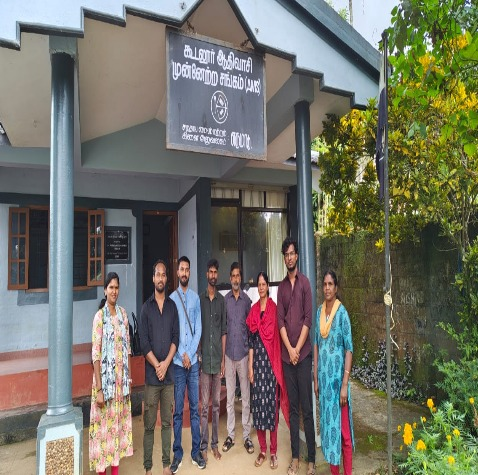
My interaction with the Educational Coordinator provided insights into the efforts being made to improve educational access among Adivasi children.
According to the discussion, each area has an Educational Coordinator who works towards protecting children's educational rights and supporting their access to schooling.
Improvement in School Enrolment
One of the important points shared during the conversation was the improvement in school enrolment among Adivasi children.
According to the information provided by the coordinator, school enrolment was initially around 6–8%. It has since increased to more than 70%.
This was highlighted as an important improvement in educational participation among the communities.
The discussion also indicated that the Mullakurumba community has comparatively higher school enrolment than the other communities.
Identifying Children for Higher Education
Another interesting aspect of the conversation was understanding how the team identifies children who may need support to pursue higher education.
The coordinators conduct educational surveys to collect information about children and their educational progress.
Based on the information collected, children are identified and categorised according to their educational requirements.
For example, students studying in higher classes, such as Classes 11 and 12, may be identified for additional support to continue their education.
The support discussed includes:
- Financial assistance.
- Educational counselling.
- Guidance sessions.
- Support in pursuing higher education.
The team provides guidance and counselling at different stages to help students understand their opportunities and continue their education.
The coordinator also mentioned that the Erumad area covers approximately 65 villages, highlighting the geographical scale of the educational coordination work.
Key Learnings from the Conversations
These three interactions helped me understand the different dimensions of community-level work at Erumad.
While Thulasi's conversation highlighted the role of digital applications in healthcare follow-ups and patient management, Baradhali's responsibilities demonstrated the importance of community awareness and support for people's rights.
Similarly, the Educational Coordinator's work showed how organised efforts can support children's access to schooling and opportunities for higher education.
Together, these conversations provided a broader understanding of how healthcare, social support, community rights, and education are connected in the day-to-day work carried out at the area level.
9 . Understanding the Use of Avni in Community Healthcare
Understanding the Use of Avni in Community Healthcare
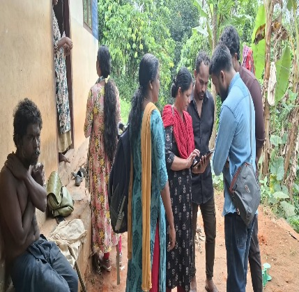
During my visit to the Erumad Adivasi Training Centre, I learned how digital technology supports the healthcare activities carried out by the community health team. One of the tools they use is Avni, which helps them maintain patient information and follow up on healthcare needs.
From my conversation with Thulasi, a social worker working under the mental health programme, I understood that the team had been using Avni for approximately ten years. The application helps them keep track of patients and monitor their progress, including follow-ups related to pregnancy and mental health.
For example, during pregnancy-related follow-ups, the team can use Avni to monitor patients and keep track of their care. Similarly, during a household visit, I observed how patient information could be used to follow up on a person receiving support for a mental health condition. The records included information about the person's response to treatment, the psychiatrist's diagnosis and observations made during follow-up visits.
Digital Records and the Continued Use of Paper
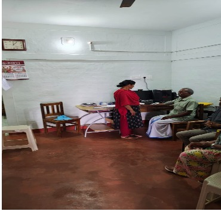
Although Avni helps the team maintain digital records, I learned that paper-based documentation is still used in their daily work.
Thulasi explained that when the number of patients is manageable, the team can enter information directly into Avni. However, when they have many patients to attend to, maintaining a diary or paper record can be more convenient. This means that both digital and paper-based methods are used, depending on the workload and situation.
She also explained that digital records reduce the time required to manage information and minimise the need to maintain and store large amounts of physical documentation.
Areas for Improvement
During our discussion, Thulasi also shared a few areas where the application could be improved.
One suggestion was to make it easier for the team to identify patients who have not completed a particular screening or received the required treatment. For example, if 100 people are registered and only 80 have completed screening, the application should help the team identify the remaining 20 people and understand why their screening or treatment is pending.
She also mentioned that the application sometimes becomes slow while entering information. In addition, charts do not always reflect the latest information after data has been entered.
These observations helped me understand that introducing digital technology is only one part of improving community healthcare. The technology must also be convenient for the people using it in their daily work. It should help healthcare workers manage information, identify pending follow-ups and make their work more efficient.
My visit gave me a better understanding of how a digital platform such as Avni can support healthcare teams working across different communities. At the same time, listening to the field team's experiences showed me why practical usability and continuous improvements are important for technology to be effective in real-world settings.
10 - Observations During the Household Visit
Observations During the Household Visit
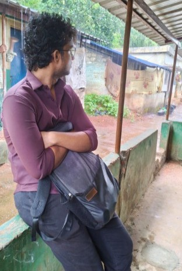
As part of the field visit, I also had the opportunity to observe a household visit conducted by the community team. This experience helped me understand how healthcare support extends beyond the hospital and area centres and reaches people within their own communities.
During the visit, we met a person who was receiving support for a mental health condition. I learned that the person's married daughter and young granddaughter were also part of the household. This interaction gave me a closer look at the social and family circumstances that community health workers may encounter while providing care.
One important aspect I observed was how the team used Avni to support patient follow-ups. The application helped them maintain information about the patient's condition, the psychiatrist's diagnosis, observations made during visits and the person's response to treatment. This information supports continuity in care by helping the team keep track of the patient's progress over time.
The visit also helped me recognise that healthcare work in a community setting involves more than identifying a medical condition or providing treatment. Health workers need to understand the patient's family situation and living circumstances as well. These interactions give them a better understanding of the challenges people face and help them provide appropriate follow-up support.
Another observation from the visit was the importance of addressing social challenges alongside healthcare needs. I became aware that issues such as early marriage can also arise within the communities. This made me reflect on how education, awareness and community-level support are important in improving people's overall well-being.
Overall, the household visit helped me understand the role of community-based healthcare more clearly. It showed me how regular follow-ups, personal interactions and proper patient records work together to support people who may need continued care.
11 - Local Environment and Livelihoods Around Erumad
Local Environment and Livelihoods Around Erumad
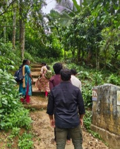
During my visit to the Erumad region, I also got an opportunity to observe the local environment and understand some of the agricultural activities carried out in the area.
The region has agricultural activities involving crops such as tea, coffee, ginger, pepper and turmeric. These crops form part of the local landscape and provide an understanding of the types of cultivation practised in the region.
Tea plantations were particularly noticeable. However, working in tea plantations requires specific skills and experience. From my observations, I understood that although these agricultural activities are part of the local economy, earning a stable livelihood through them may not be equally accessible to everyone.
This made me think about the relationship between the local environment, available livelihood opportunities and the economic circumstances of the people living in the region. Understanding a community also requires looking beyond its healthcare and education needs to recognise the conditions in which people live and work.
The visit helped me see Erumad not just as a place where community healthcare programmes operate, but also as a region with its own agricultural activities and livelihood challenges.
Field Visit : Devarshola Adivasi Centre
- Date of Visit : 23 , Oct 2026
- Location of Area Center : Devarshola Adivasi Center
- Timing of Report : 9:00am
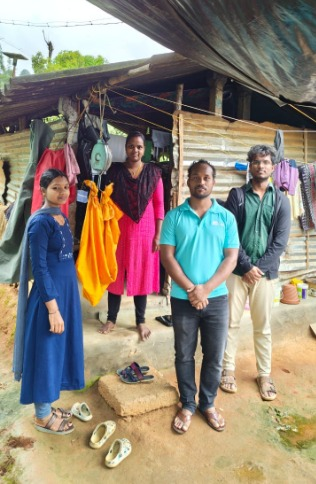
After visiting the Erumad Area Centre, we also visited the Devarshola Area Centre to understand how healthcare activities are carried out in another part of the region.
I learned that the Devarshola Area Centre covers around 38 villages and works with three major Adivasi communities: Paniyas, Bettakurumbas and Kattunayakkans.
During this visit, I noticed that some of the major health conditions identified in the communities included hypertension, malnutrition, diabetes and other chronic health conditions. I found that the overall pattern of healthcare activities and challenges was quite similar to what we had observed during our visit to the Erumad Area Centre.
One of the most interesting parts of this visit was going to a village under the Devarshola Area Centre. There, I observed Health Animators measuring the weight of children below five years of age. This activity helped me understand how healthcare workers regularly monitor the health and growth of young children at the village level.
Until then, I had mainly understood community healthcare through the discussions we had with the team and the information maintained in digital records. Watching the Health Animators interact with families and carry out these measurements gave me a clearer picture of how healthcare services reach people directly in their villages.
This visit helped me understand that the work of an Area Centre is not limited to maintaining patient records or providing support at the centre. It also involves regular village visits, observing people's health conditions and identifying healthcare needs within the community.
Conclusion: Key Learnings from the Field Visit
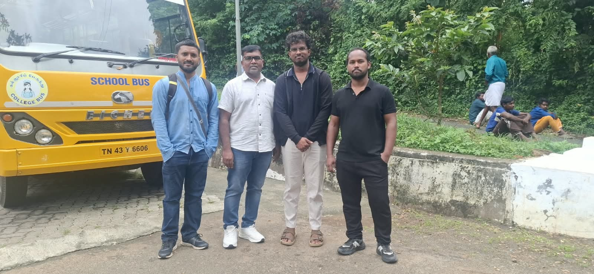
My field visit to ASHWINI and the Erumad Adivasi Training Centre helped me understand how healthcare, education and community development are connected in the lives of Adivasi communities.
Before the visit, I mainly looked at ASHWINI from a healthcare perspective. However, through my interactions with the team and my observations, I began to understand the wider network of support behind its work. AMS represents the Adivasi communities and works towards protecting their rights and identity. ACCORD provides organisational support, while ASHWINI focuses on healthcare. The work connected with education also highlights the importance of supporting children and creating opportunities for their future.
One of the most important things I learned was how healthcare services reach people beyond the hospital. The three-tier healthcare system connects village-level health volunteers, area centres and the hospital. This approach helps the team maintain contact with communities, follow up on patients and provide support closer to where people live.
My conversations with the team also helped me understand the importance of the people working behind these programmes. Health Animators, social workers and Educational Coordinators have different responsibilities, but their work is connected by a common purpose: supporting the well-being and development of the community.
Another important learning was the role of technology in community-based work. Through my discussions about Avni, I understood how digital records can help healthcare workers manage patient information and follow-ups. At the same time, I learned that technology must respond to the practical needs of its users. The team's feedback about paper records, application performance and reporting features showed me why continuous improvements are necessary.
The household visit and conversations with community workers also helped me look beyond the technical aspects of the organisation. I could see that supporting a community involves understanding people's health conditions, family circumstances, education and livelihood challenges. These aspects cannot always be addressed through a single programme or service.
Overall, this field visit gave me an opportunity to connect what I had learned about technology with the realities of community-level work. It helped me understand that technology becomes more meaningful when it supports the people who work directly with communities and helps them deliver services more effectively.
I left the visit with a broader understanding of ASHWINI's work and the importance of community participation. More importantly, it reminded me that meaningful development is not only about providing services; it is also about strengthening communities so that they can understand, protect and shape their own futures.
A Special Note of Thanks
Before concluding this report, I want to express my deepest gratitude to my mentor, Sathyaseelan Sir, who made this entire field visit possible and incredibly effective.
Navigating the community visits would have been immensely difficult without his guidance. He was exceptionally well-organised, patiently resolving all our doubts and bridging the language barrier by translating our questions so we could connect meaningfully with the community.
He consistently went above and beyond, even driving us in his own car to remote areas where transport is scarce. His warmth and constant support made us feel like family throughout the journey.
The valuable insights gained from this experience are a direct result of his mentorship. Thank you so much, Sir, for your time, dedication, and for being such an exceptional guide.
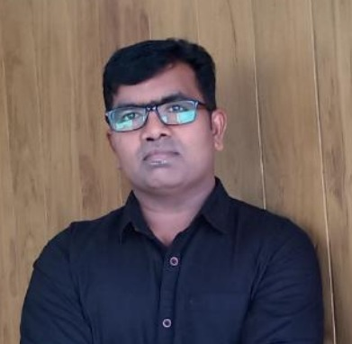
Sathyaseelan Sir
Mentor & Guide